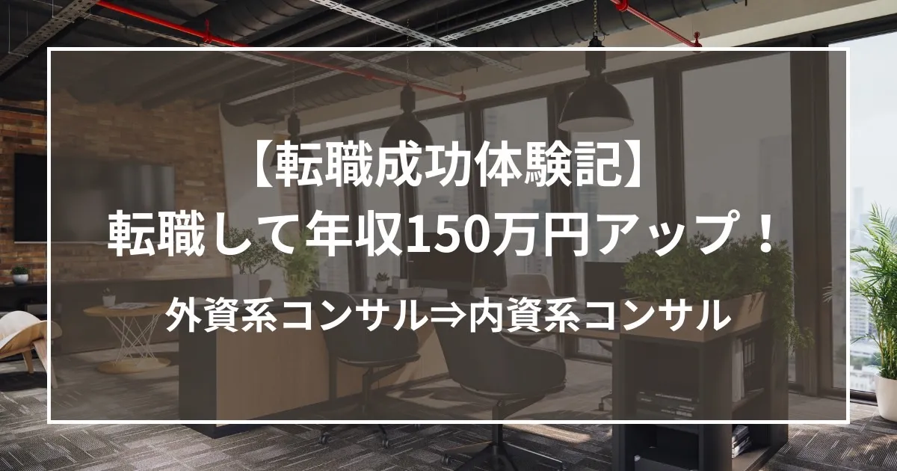

営業から戦略コンサルへ。悩み抜いた末に掴んだ、年収150万円アップの転職

私は新卒で、直販ビジネスを手掛ける大手SI企業に入社しました。
入社後3年10カ月は法人営業として経験を積み、その後はディストリビューターとしてクライアント営業を担当してきました。
そんな中、30歳を迎える年に、日系の戦略コンサルティングファームへの転職を決意しました。
正直に言うと、営業からコンサルへの転職は、自分にとってかなり大きな挑戦でした。
営業として一定の実績を積み上げてきた実感もありましたし、外資系メーカーや国内大手SIerへの転職、あるいは現職での昇格も視野に入っていたため、本当にこのタイミングでコンサルに進むべきなのか、非常に悩みました。
そのような中で、担当の村木さんに、自分のこれまでの経験や将来に対する思いを率直にお伝えしました。
すると、単に「大丈夫です」と背中を押すのではなく、なぜ自分がコンサルでも通用するのかを、これまでの経験に基づいて具体的かつ論理的に説明してくださり、納得感を持って戦略コンサルへの挑戦を決断することができました。
面接で評価されたと感じた3つのポイント
今回受けた企業数自体は多くありませんでしたが、複数社から内定をいただくことができました。
その理由として、主に3つあったと感じています。
1. 単なる営業ではなく、ビジネス全体を捉えて提案してきたこと
現職では、単に製品を売る"物売り"としてではなく、
お客様のビジネスの仕組みや課題の背景を理解したうえで、何をどう提案すべきかを考えることを常に意識してきました。
たとえば、
• なぜお客様はその課題を抱えているのか
• 理想の将来像を実現するには何が必要か
• どの製品・サービスを、どのように組み合わせるべきか
• 実現に向けて、今何が足りていないのか
といった点まで踏み込んで考え、提案してきた経験があります。
このような全体像の理解力と、そこから必要な行動に落とし込む課題解決力・実行力が、コンサル転職においても評価されたのではないかと思います。
2. 成果だけでなく、成果が出た理由を言語化できたこと
もう一つ大きかったのは、
自分がどのような考え方で仕事に向き合い、なぜ結果を出せたのかを、具体的に説明できたことです。
これまでの仕事を振り返ったときに、単に「頑張りました」「成果を出しました」ではなく、
• 何を意識していたのか
• どのように行動したのか
• なぜその結果につながったのか
を整理して話せたことが、面接官の評価につながったと感じています。
3. 担当エージェントのサポートが非常に的確だったこと
そして何より大きかったのは、担当の村木さんのサポートです。
これまでの経験や強みを、自分一人でここまで明確に整理するのは難しかったと思います。
職務経歴書についても、私の経験が伝わるよう、内容を分かりやすく整理してくださり、面接対策でも、コンサル業界ではどのような思考や受け答えが求められるのかを丁寧に教えていただきました。
さらに、私自身の希望条件が複雑だったにもかかわらず、最後まで真摯に向き合ってくださったことが、今回の転職成功の大きな要因だったと感じています。
他のエージェントとの違いを感じたサポート体制
今回の転職活動を通じて、村木さんのサポートは、他のエージェントと比べても非常に充実していると感じました。
特に印象的だったのは、内定獲得までの支援にとどまらず、内定後のフォローまで具体的だったことです。
• 入社までに何を勉強すべきか
• どのような準備を進めるべきか
• 逆に、今の段階で何をしない方がよいか
といった点まで明確にアドバイスをいただけたことで、転職後の立ち上がりに対する不安も大きく軽減されました。
最終的に、すべての条件を満たした転職に
結果として、私は年収150万円アップを実現し、希望していた条件をすべて満たした形で転職を果たすことができました。
もちろん、転職そのものは簡単な決断ではありませんでした。
ですが、自分の経験をどう捉え直し、どう伝えるかによって、キャリアの可能性は大きく広がるのだと実感しました。
営業からコンサルというキャリアチェンジに不安を感じている方も多いと思います。
私自身もまさにそうでした。
それでも、自分の経験を正しく整理し、本質的な強みを言語化できれば、十分に道は開けると思います。
今回の転職活動を支えてくださった村木さんには、心から感謝しています。
Go back to Insight